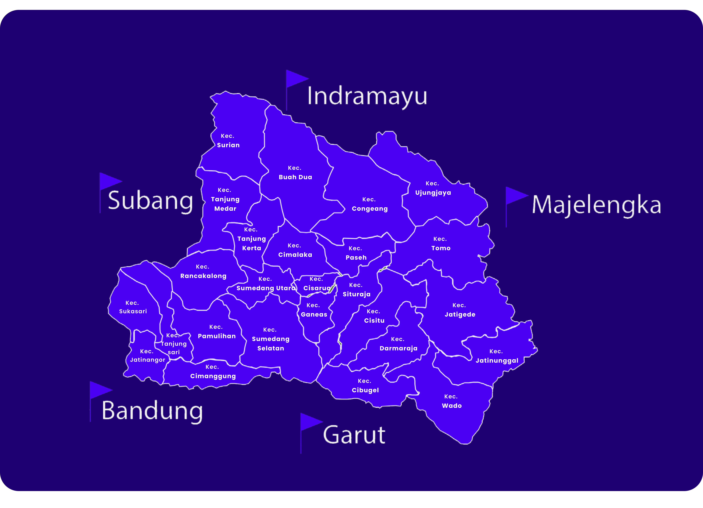

Sejarah
Kabupaten Sumedang merupakan sebuah kabupaten yang berada di wilayah Propinsi Jawa Barat. Kabupaten Sumedang memiliki perjalanan sejarah yang panjang. Sebelum berbentuk kabupaten,
Sumedang merupakan sebuah kerajaan yang bernama Kerajaan Sumedang Larang. Sebelum bernama Sumedang Larang, cikal bakalnya bernama Kerajaan Tembong Agung yang didirikan oleh Prabu Aji Putih.
Kemudian ketika kekuasaan kerajaan berpindah kepada putranya, nama kerajaan berganti menjadi Himbar Buana dan kemudian berganti lagi menjadi Kerajaan Sumedang Larang.
Kerajaan Sumedang Larang menjadi pewaris kekuasaan Kerajaan Padjadjaran ketika Kerajaan Padjadjaran runtuh setelah menerima empat orang Kandaga Lante Kerajaan Padjadjaran beserta simbol
kerajaan berupa Mahkota Binokasih. Pada saat itu wilayah kekuasaan Kerajaan Sumedang Larang semakin luas sebagai warisan dari Kerajaan Padjadjaran.
Sepeninggal Prabu Geusan Ulun, kekuasaan Kerajaan Sumedang Larang melemah menyebabkan banyak wilayah yang melepaskan diri dari kekuasaan Kerajaan Sumedang Larang. Dan akhirnya kekuasaannya hanya meliputi Parakanmuncang, Bandung dan Sukapura saja.
Dan ketika Kerajaan Mataram memperluas kekuasaannya sampai ke wilayah Jawa Barat, Sumedang memilih untuk tunduk dan menjadi bagian dari kekuasaan Kerajaan Mataram dengan status bukan lagi sebagai kerajaan namun lebih sebagai sebuah kabupaten.
Ketika penjajah Belanda atau VOC bisa menguasai wilayah Jawa Barat dari kekuasaan Kerajaan Mataram, pihaknya membagi-bagi wilayah Jawa Barat menjadi beberapa kabupaten termasuk Kabupaten Sumedang.
Untuk peresmian Kabupaten Sumedang sendiri sebagai sebuah Kabupaten di bawah pemerintahan Propinsi Jawa Barat dikukuhkan berdasarkan Undang-undang Nomor 14 tahun 1950 tentang Pembentukan Daerah-daerah Kabupaten dalam Lingkungan Provinsi Djawa Barat
(Berita Negara Republik Indonesia tahun 1950) sebagaimana telah diubah dengan Undang-undang Nomor 4 tahun 1968 tentang Pembentukan Kabupaten Purwakarta dan Subang dengan mengubah Undang-undang Nomor 14 tahun 1950 tentang Pembentukan Daerah-daerah Kabupaten dalam Lingkungan Provinsi Jawa Barat
(Lembar Negara Republik Indonesia tahun 1968 nomor 31, tambahan Lembar Negara Republik Indonesia nomor 2851).
Geografis
Kabupaten Sumedang (Sunda: ᮊᮘᮥᮕᮒᮦᮔ᮪ ᮞᮥᮙᮨᮓᮀ, Latin: Kabupatén Sumedang) adalah sebuah kabupaten di Provinsi Jawa Barat, Indonesia.
Ibu kotanya adalah kecamatan Sumedang Utara, Sumedang, sekitar 45 km Timur Laut Kota Bandung. Kota ini juga terkenal akan Tahu-nya yang sangat Gurih dan enak.
Luas Wilayah Kabupaten Sumedang adalah 155.871,98 Ha sesuai dengan Peraturan Daerah Kabupaten Sumedang No 2 tahun 2012
tentang Rencana Tata Ruang Wilayah Kabupaten Sumedang Tahun 2011 - 2031 yang terdiri dari 26 kecamatan terbagi ke dalam 270 desa dan 7 kelurahan.
Kecamatan yang paling luas wilayahnya adalah Kecamatan Buahdua (6,91%) dari total luasan Kabupaten Sumedang, sedangkan yang paling kecil luas wilayahnya adalah Kecamatan Cisarua (1,14 %).

Wisata
Tupografi Sumedang didominasi oleh pegunungan dan sawah, sehingga pemandangan alamnya begitu indah.
Bisa jadi rekomendasi untuk Anda yang ingin mencari ketenangan dari hiruk-pikuk perkotaan.
1. Situ Cilembang

Danau Situ Cilembang merupakan salah destinasi wisata alam di Sumedang yang wajib Anda kunjungi, karena memiliki keindahan panorama menakjubkan. Serta airnya sangat jernih dan bersih, bahkan warga sekitar menjadikannya sumber mata air.
Lokasinya ada di Desa Hariang, Kecamatan Buahdua Kabupaten Sumedang, Jawa Barat. Banyak spot-spot menarik yang bisa Anda jelajahi untuk mempercantik koleksi foto-foto.
Air situ atau danau ini seperti warna buatan padahal memang alami seperti itu adanya. Warna biru situ mungil ini merupakan pantulan warna langit yang diterjemahkan secara sempurna oleh air Situ Cilemang yang sama sekali belum terkontaminasi.
Tapi sangat disayangkan karena kita dilarang mandi mandi disini, karena dikhawatirkan akan mencemari air biru situ Cilembang ini. Selain itu, kita juga dilarang berkunjung ke mata air ini pada hari Selasa dan Jumat.
Meskipun demikian, wisatawan terus berdatangan untuk melihat keindahan situ ini dari dekat, karena penasaran dengan keindahan dari gambar yang beredar di media sosial.
2. Kampung TOGA Sumedang
TOGA adalah singkatan dari Tamanan Obat Keluarga. Di sini kalian Anda akan diajak mengenal berbagai tanaman obat dengan cara yang lebih menyenangkan.
Tempat wisata satu ini jaraknya kurang lebih 2 km dari Sumedang kota. Tepatnya di Jalan Makam Cut Nyak Dien Gunung Puyuh, Desa Sukajaya, Sumedang Selatan, Kabupaten Sumedang, Jawa Barat.
Kampung Toga merupakan salah satu ikon destinasi wisata unggulan Kabupaten Sumedang. Kampung Toga yang berada di Desa Sukajaya, Kecamatan Sumedang Selatan ini kini tampil dengan wajah baru dengan nama Toga Hill.
Tampil dengan wajah baru, beberapa penambahan spot wisata akan membuat pangling bagi para pengunjung.
Bupati Sumedang H. Dony Ahmad Munir menyampaikan Kehadiran Toga Hill, diharapkan dapat mendongkrak pertumbuhan ekonomi dan pariwisata di Kabupaten Sumedang. "Ini impian Pemkab Sumedang, kami sudah declair Sumedang sebagai Kabupaten Pariwisata.
Empat A yakni Aksesibilitas, Amenitas, Atraksi dan Amenitas sangat memadai," ujarnya.
3. Kampung Karuhun
Kampung Karuhun merupakan sebuah kawasan wisata terpadu yang berada di wilayah Desa Citengah Kecamatan Sumedang Selatan. Lokasinya sekitar tujuh kilometer dari pusat kota Sumedang ke arah selatan.
Kawasan Kampung Karuhun berupa pesawahan berbukit dan lingkungan hutan tropis yang masih terjaga keasriannya. Berbagai fasilitas dan wahana wisata tersedia di Kampung Karuhun. Ada fasilitas restoran,
meeting room, pojok seni, cottage, saung budaya, meeting room, wedding door serta berbagai wahana seperti atv, flying fox dan river tubbing. Fasilitas restoran Kampung Karuhun menyediakan menu andalan
Cobek Karuhun ditambah dengan nasi liwet komplit di buat secara langsung. Tersedia menu lainnya yang bisa dipilih. Ada juga fasilitas Saung Budaya yang digunakan untuk pementasan seni kedaerahan.
Bagi yang ingin mencoba olahraga penjelajahan, Kampung Karuhun juga menyediakan wahana adventure.
4. Nangorak Camp
Agrowisata Kampung Nangorak bisa Anda jadikan destinasi wisata edukasi bersama keluarga tercinta, khususnya anak-anak. Memiliki konsep agroedutekno wisata, tempat ini tidak hanya sekadar menawarkan rekreasi alam saja.
Di agrowisata Kampung Nangorak ini wisatawan bisa melihat dan ikut dalam aktivitas perkebunan, pertanian, serta budidaya tanaman dari 250 jenis tanaman dan pohon. Wisatawan yang datang juga bisa berjalan-jalan di kebun
strawberry sambil memetik dan mencicipi buahnya yang terlihat merah ketuaan. Selain itu, bagi anda yang hobi memancing, juga terdapat tempat memancing disini. Di lahan tertinggi dari kawasan agroteknobisnis ini yang berbatasan
dengan hutan asli / premier juga dapat digunakan untuk camping.
5. Kampoeng Ciherang
Kampung Ciherang merupakan salah satu tempat wisata hits di Sumedang 2023. Destinasi ini memberikan pengalaman wisata alam mempesona, terdapat hutan pinus di sekelilingnya.
Lokasinya ada di Jalan Cijambu, Tanjungsari, Sumedang, Jawa Barat, Harga tiket masuk Kampung Ciherang ini mulai dari Rp 40 ribu dengan berbagai fasilitas yang tersedia.
Wana wisata Kampoeng Ciherang merupakan kawasan wisata yang relatif baru berdiri yang berada di wilayah Desa Cijambu Kecamatan Tanjungsari.
Wana wisata ini berdiri sekitar akhir tahun 2016 di kawasan hutan pinus dekat dengan aliran sungai Ciherang. Wana wisata Kampoeng Ciherang menawarkan wisata alam yang didukung
dengan berbagai fasilitas dan wahana yang akan memanjakan pengunjungnya.
Berikut merupakan salah satu tempat wisata yang ada di Sumedang. Ada banyak tempat wisata yang harus anda kunjungi bagi pendatang baru maupun warga lokal, untuk lebih lengkapnya silahkan kunjungi website jelajahi sumedang berikut:
Klik Disini